One common use for
static methods is to
create object factories, methods that can be
used in place of more complex constructors. This is
especially useful, when it is difficult for you,
the programmer, to know exactly how to construct
an object.
Let me give you an example. Up until now in this class,
we've used the String.format() and the
System.out.printf() methods to produce formatted
text. However, Java has a second way of doing that which
is much more flexible: by using the formatting classes in
the java.text package:
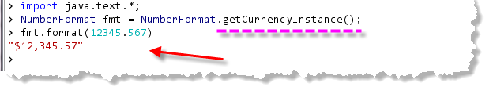
Notice:- I created my
NumberFormat"formatting object" by calling a method in theNumberFormatclass, namedgetCurrencyInstance(). - This is an example of a factory method, used instead of a constructor.
- With the factory method, I didn't have to specify all of the messy details, such as the currency symbol, the number of decimal places and so on. The factory took care of the details for me.
Actually, the situation is even more interesting than that. How, for instance, do you suppose Java knew that I wanted a dollar sign for my currency, and commas for the separators? Because I'm running the program in the USA on an American configured computer.
If I change those defaults in the Windows Control Panel, so that
the program "thinks" that I am using the computer in French speaking
Switzerland, (for instance):
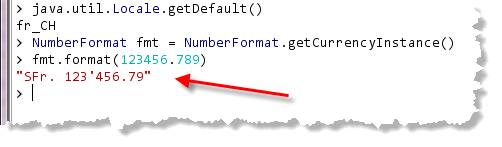
thegetCurrencyInstance()
method is "smart" enough to construct a NumberFormat
object that obeys the local conventions in that environment. That would be
a lot of work using a conventional constructor.
Object Factories by Example
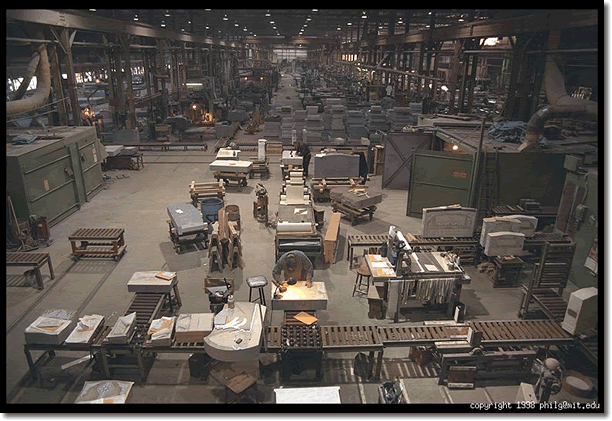
Object factory methods are a useful technique that you should be aware of and able to implement. Suppose, for instance, that you have an application that contains many buttons, and that all of the buttons must be blue, and use 14-point type. You could use the regular methods
supplied by the JButton class to create each
JButton object, but that would mean changing the
color and setting the font for every single button
that you create.
Creating an Object Factory Method
A better idea is to create an object factory method to construct your buttons for you. To create a factory method you follow these three steps:
- In your method header, use a return type of
JButton. If you were to create some other type of object, you'd put that return type there instead. - Inside your method, create a local
JButtonobject using thenewoperator and then change its font and text color as normal. - Use the
returnstatement to return your modifiedJButtonobject.
Factory methods are almost always static methods
as well, so that you don't need an instance to use its services.
The ButtonFactory
Let's create a class called ButtonFactory that contains a
single factory method named getBigBlueButton().
The skeleton for the ButtonFactory class
should look something like this:
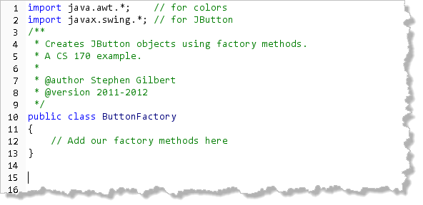
Note that the onlyimport statements we need are
java.awt and javax.swing,
and that the class doesn't extend anything. (If we wanted to use
the ButtonFactory class in many projects, though,
we'd probably stick it inside a package, so that it could be
imported.)
Method Header
Now, let's write our method header. Remember that this will
be a public static method, and it will have to
return a JButton. Since our method doesn't
take any arguments, at this point, the method
should look like this:
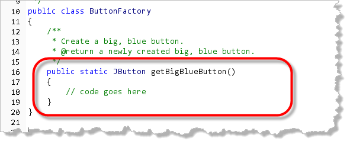
Manufacture the Object
Next, inside the method, we'll use the regular JButton
constructor, to create the JButton we'll be
returning, like this:
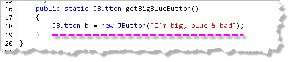
Customizing the Object
Next, use any of the normal methods to customize the object as needed. In our case those customizations include a blue foreground and a 14 point font:
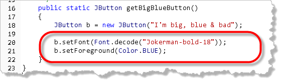
Deliver the Results
The last step is to use the return statement to
send the spiffed up button back to the customer, like this:
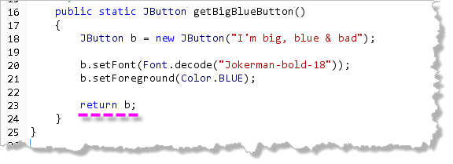
Using getBigBlueButton()
With your factory method, you can create your buttons
using getBigBlueButton() in place of using
new. Here's an ACM application,
BlueButtons.java, that creates three big
blue buttons using this method:
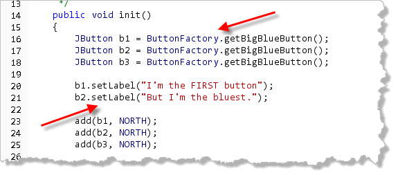
Notice how the class name,ButtonFactory is
used to call the getBigBlueButton() method.
Note also that we can use any JButton methods,
like setLabel(), on the returned objects.
Here's what the program looks like when running:
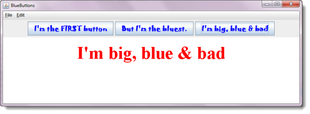
You'll find the program in this chapter's code folder so once you complete this much of ButtonFactory.java you can compile and run it yourself.But Why Bother?
The real advantage of using a factory method like
getBigBlueButton(), instead of using
new JButton(...) and the JButton
methods, is that next week, when your job specs are changed
to require 14 point type instead of 18, or, when the boss
decides that buttons using the Jokerman font really aren't all
that hip, you have to change only a single line of code.
Of course getBigBlueButton() would
be a lot more useful if you could tell it what text you wanted
to display, or even what color to use. Let's fix it!
Parameters Revisited and Reviewed
As you learned earlier, most methods require additional information to carry out their work. A method that computes square roots, for instance, requires the number to operate on.
A method like getBigBlueButton(), would be much
more useful if you could specify the text it should contain or
other aspects of its behavior. Fortunately, that's very easy to
accomplish by writing your method so that it contains
parameters, and then passing different argument
values when you actually call the method.
You first met parameters back in the aptly named Section 5.2—Passing Parameters. Some of this material is just a review of that information, but goes into a little more depth.
What are Parameters?
A formal parameter is a local variable, specifically designed to store information that is sent to a method. A regular local variable, you recall, is declared like this:
public void anyMethod()
{
int aLocalVar = 32;
}
The variable aLocalVar is a "bucket" that holds
a temporary integer. The variable can only be seen inside the
method, and the memory used by the variable is reclaimed once
the method ends.
A formal parameter works exactly like this local variable except that:
- it is declared inside the parameter list, instead of inside the method body.
- it is implicitly initialized, rather than explicitly.
After adding a formal parameter to anyMethod(),
it would look like this:
public void anyMethod(int aFormalParam)
{
int aLocalVar = 32;
}
Initializing Formal Parameter
To initialize the formal parameter aFormalParam,
you pass different values when calling the
method. These values are called actual parameters,
actual arguments, or just arguments.
For instance, if you call anyMethod() like
this:
anyMethod(13);
the value 13 is copied into the formal parameter,
aFormalParam, just as if the definition
of anyMethod() looked like this:
public void anyMethod(int aFormalParam)
{
aFormalParam = 13;
int aLocalVar = 32;
}
Of course, the big difference is that aLocalVar
will have the same value each time the method is called,
but aFormalParam can take on a different value
each time.
This means that by calling anyMethod()
using different actual arguments, you can customize the way that
anyMethod() behaves.
Improving the ButtonFactory
Let's see how this works by writing a few new and
improved versions of the ButtonFactory()
factory methods. We'll start with a single-parameter
method that allows users to specify the text displayed
by their custom buttons.
Writing a method that has a single parameter is as easy as 1-2-3. Here are the steps:
Step 1 : Method Header
The first step is to modify your method header so
that you can supply the text necessary to customize your
buttons. That means you'll have to declare a
String variable to act as the formal
parameter in the getBigBlueButton() argument list.
The previous definition of getBigBlueButton()
looked like this:
public static JButton getBigBlueButton()
The new, improved version looks like this:
public static JButton getBigBlueButton(String text)
Step 2 : Method Body
Inside the method, use the new formal parameter to
initialize the local JButton object. The previous
version looked like this:
JButton b = new JButton("I'm big, bad, & blue");
Using the formal parameter inside the method body, the new version looks like this:
JButton b = new JButton(text);
Step 3 : Call the Method
When you call your method, pass the actual values you
want to use. The BlueButtons program, for instance,
used the init() method to change the text of
two JButtons like this:
b1.setLabel("I'm FIRST");
b2.setLabel("I'm BLUEST");
Using the new, improved version of getBigBlueButton()
you can perform the initialization in the factory method,
like this:
JButton b1 = ButtonFactory.getBigBlueButton("I'm FIRST");
JButton b2 = ButtonFactory.getBigBlueButton("I'm BLUEST");
Multiple-Parameter Methods
When a method has multiple formal parameters, the syntax for declaring those arguments is a little different than the syntax for declaring multiple local variables.
For instance, if your method contains two int
local variables named x and y,
you can declare those variables like this:
int x = 3, y = 2;
Note that the keyword int is not repeated
for each variable. When you declare two int
parameters named x and y however,
you must supply a type for each parameter, even if the type
of all parameters is the same. Here's an example:
public void anyMethod(int x, int y)
Each type-name pair is separated from the others by a comma; thus, if you have two arguments, you need one comma, if you have three arguments, you need two commas, and so on.
The getButton() Method
Let's put this information to work creating a factory method
named getButton(), similar to
getBigBlueButton(), that can make buttons of any
color, using any font size.
You already saw how to change getBigBlueButton()
so that each button it produced had a customized inscription.
What information do you need to pass to getButton()
so that it can perform these added tasks?
You need to pass in three pieces of information:
- The text to display on the button. For that you'll
use a
Stringparameter, just like ingetBigBlueButton(). - The size of the font. For this, you'll use an
intformal parameter. - The color of the text. For this, you'll use a Color object.
Here's a version of getButton() that meets those
requirements :
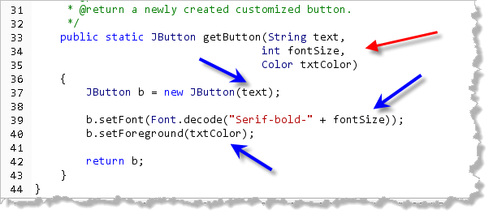
The red arrow points to the three formal parameters where they are declared, and the blue arrows point to the locations where each parameter is used.MoreButtons.java
Here's a short program
MoreButtons.java, that uses the getButton()
method to create a couple of different kinds of buttons and
then displays some information about them when clicked:
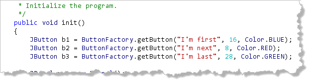
You can find the code in this chapter's code folder so you can run it once you've completed thegetButton() method.
Here's what the program looks like running on my computer: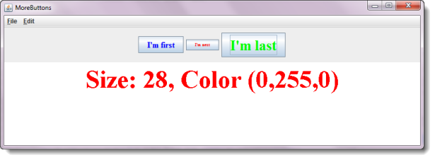
The Singleton Pattern
Another common use for a factory
method is to restrict the number of objects of a given
class that can exist at any given time. The most common
restriction is when you want only one instance to
exist at any given time. You may want one object
(for instance a Game object), to coordinate
actions across the system.
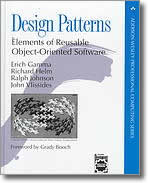
The most common way to do that is to implement what is known as the singleton pattern. I've mentioned before that a pattern is just a recipe for commonly occurring design. In software, one of the most influential books of the last few years has been Design Patterns: Elements of Reusable Object-Oriented Software by Gamma, Helm, Johnson and Vissides, (often referred to as the "Gang of Four" or GOF).They identified 23 classic software design patterns that had often been used in successful object-oriented projects. Along with these designs the book listed the pros and cons of using the design, along with tips and sample code in Smalltalk and C++.
A Singleton Class
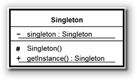
The singleton pattern is implemented by creating a class with a method that creates a new instance of the class if one does not exist. If an instance already exists, it simply returns a reference to that object.
To make sure that the object cannot be instantiated any other
way, the constructor is made private.
(Some recommend making the class protected as shown
in the UML diagram here with the # symbol so
that the class can be extended and more easily tested.)
Here is the simple, traditional or classic version of the singleton code:
public class Singleton
{
private static final Singleton instance = new Singleton();
// Prevent instantiation from other classes
private Singleton() { ... }
// Return the single instance of the class
public static Singleton getInstance()
{
return instance;
}
}

Factory Method Summary
- An object factory is a method that creates and returns an object.
- Object factories are used in place of constructors to simplify complex construction parameters.
- Object factory methods are usually defined as static methods since the purpose of the method is to construct and object, and static methods can be called without first creating an object.
- An object factory first creates an instance of the class desired, then customizes it before it is returned to the caller of the method.
- A class may have several object factory methods,
each returning an instance customized in a special way,
such as the
NumberFormatmethodsgetCurrencyInstance(),getNumberInstance()andgetPercentInstance(). - An object factory may take parameters to customize the construction of the object returned.
- One use for an object factory is to design a singleton
class. This is a class that restricts the number of
instance that can exist to one. To create a singleton,
have the class create a private instance of itself as a
staticfield, provide aprivateconstructor so that instances cannot be created any other way, and then provide agetInstance()method to provide access to the single instance.